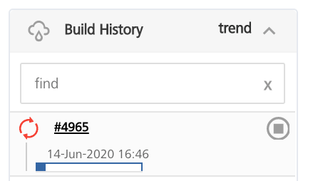

Building a Foundry app
To build a Foundry App build, you need to run the buildFoundryApp job. When you perform a build for the first time, you need to configure the build settings. App Factory stores the settings from the build to make configurations of the future builds easier by providing the Rebuild option.
To run the buildFoundryApp job and configure the parameters, follow these steps:
- Open the folder of your App Factory project, and then navigate to Foundry → Builds → buildFoundryApp.
-
Run the job by using the Build with parameters option. You can access the option by following either of these steps.
Note: If you don’t see the option, you might not have ownership permissions to the project. You can verify whether your name is listed in the Folder Owners section of the project. The Primary owner of the project can add users as secondary owners to grant permissions to the builds.
- On the right-side of the job row, select the icon that represents Build with Parameters
- Open the drop-down list for the buildFoundryApp job, and then select Build with Parameters
- Open the buildFoundryApp job and click Build with Parameters on the left panel
- Configure the build parameters for the job. For more information about the parameters, refer to the following sections.
Source Control related parameters
| Parameter | Description |
|---|---|
| SCM_BRANCH | Specifies the branch, release tag, or the commit ID of the repository that contains the source code of the Foundry app. |
Java related parameters
Important: The JAR files that you want to use for your project must follow the Maven naming convention. For more information, refer to JAR file naming convention.
Foundry related parameters
| Parameter | Description |
|---|---|
| FOUNDRY_APP_CONFIG | Specifies the configuration that App Factory uses to connect the Iris (client) app to corresponding Foundry (server) app.The configuration includes the hosting type, cloud account, environment name, and the Foundry app name.The build pipeline refers to this parameter for the Foundry Account details to Import and Publish the app. For more information, refer to Adding new VoltMX Foundry App Config. |
| IMPORT | Specifies whether App Factory must import the Foundry app to the Foundry cloud that is specified in the FOUNDRY_APP_CONFIG.If the parameter is disabled and you want to import the app, you must download the package from the link that is shared in the email and manually import it to Foundry.If this parameter is enabled, App Factory displays the following build parameters:FOUNDRY_CREDENTIALS_IDIMPORT_FOUNDRY_APP_VERSIONPUBLISHNote: To publish the Foundry app to an environment, you must import the app to the Foundry cloud. |
| FOUNDRY_CREDENTIALS_ID | Specifies the credentials that App Factory uses to import and publish the app to the Foundry cloud. The Foundry cloud must be specified in the FOUNDRY_APP_CONFIG. For more information, refer to Adding New Cloud Credentials.Note: This parameter is displayed only if IMPORT is enabled. |
| IMPORT_FOUNDRY_APP_VERSION | Specifies the location from which the version of the Foundry app is fetched.To fetch the app version, you can use either of these sources:Meta.json file that is stored in the repositoryFOUNDRY_APP_CONFIG parameterType the version manually Note: If you select the Type it in option, App Factory displays the FOUNDRY_APP_VERSION parameter.This parameter is displayed only if IMPORT is enabled. |
| FOUNDRY_APP_VERSION | Specifies the version of the Foundry app that you want to import.The version must be in the format <major>.<minor>, for example: 1.0 or 999.99. The major version must be between 1 and 999, and the minor version must be between 1 and 99.Note: This parameter is applicable only if the IMPORT_FOUNDRY_APP_VERSION is selected as Type it in. |
| PUBLISH | Specifies whether App Factory must publish the app to the Foundry environment.If the parameter is disabled and you want to publish the app to a run-time environment, you need to manually publish the app from the Foundry console.If you enable this parameter, App Factory displays the following parameters:SERVICE_CONFIG_PATHNote: This parameter is displayed only if IMPORT is enabled. |
| SERVICE_CONFIG_PATH | Specifies the path to the service configuration JSON file relative to the root of the source code repository. For information about service configuration, refer to Managing Service Profiles.Important: This parameter is only applicable for Foundry Console versions V9SP2 or later.App Factory supports custom locations for the configuration file, but HCL recommends naming the folder configuration. HCL also recommends naming every JSON file after the environment it is meant for. For example: If your environment is called Test Env, your configuration file should be configuration/Test_Env.json.Note: This parameter is displayed only if the PUBLISH parameter is selected. |
Custom Hooks related parameters
| Parameter | Description |
|---|---|
| RUN_CUSTOM_HOOKS | Specifies whether Custom Hooks must be run as part of the build pipeline. If this parameter is disabled, App Factory does not run Custom Hooks in the build pipeline. |
- After you configure the parameters for the buildFoundryApp job, click BUILD.
After a Build is successfully triggered, you can check the status of the build in the Build History panel. The following screenshot displays a build that is in progress (#4965) with the progress indicator icon.

You can click the icon to see the detailed output of the current build, or click the progress bar to open the build page of the job. From the build page, you can click Console Output to display the detailed output of the running build.